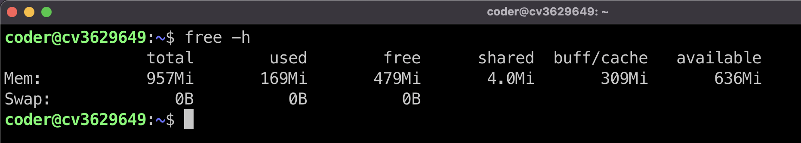
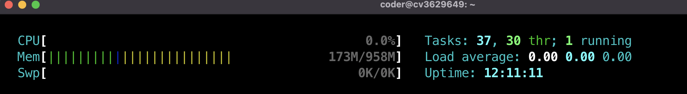
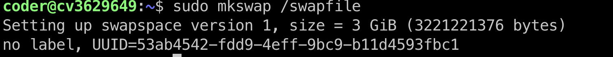
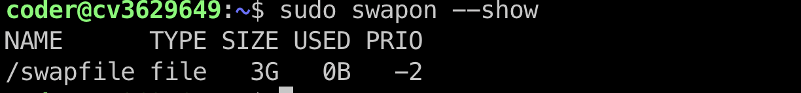
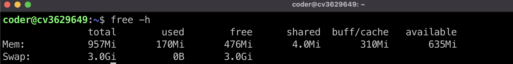
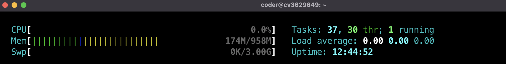
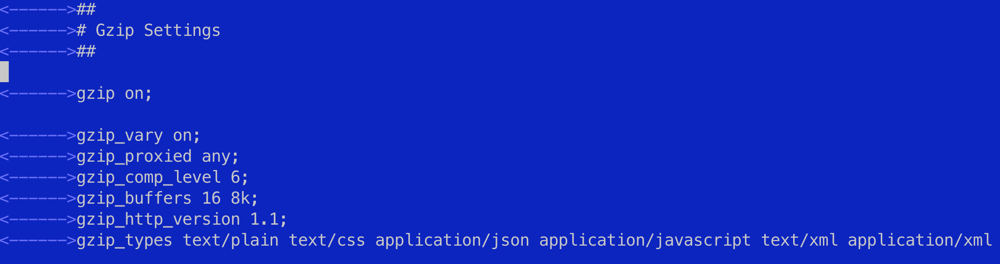

Linux
Установка программ / пакетов / полезные команды
Обновляем списки пакетов / обновление всех установленных пакетов до их последних версий
- удалить пакет
- поиск пакета по репозиториям
- все доступные пакеты
#ssh
Сгенерировать ключ
Вывести ключ в терминал
Скопировать ключ на удаленный сервер
После ввода команды, введите пароль (не будет отображаться) и нажмите ENTER. Утилита скопирует содержимое открытого ключа (~/.ssh/id_rsa.pub) на удаленный сервер в файл authorized_keys.
Если соединение быстро обрывается можно использовать эту команду
Зайти на сервер по ssh
#Учетные записи
меняем пароль пользователя ROOT
при вводе символы не отображаются — нет ни букв, ни цифр, ни звездочек, это нормально, введи новый пароль и нажми Enter
запрет входа по паролю ROOT
когда вы убедились, что можете войти на сервер по SSH-ключу, стоит отключить возможность входа по паролю. Откройте файл конфигурации SSH
PasswordAuthentication no
Раскомментируйте (убрав # в начале строки) параметр PasswordAuthentication и укажите значение no, получив строку вида

перезапустите службу SSH
сохраните файл и перезапустите службу SSH командой
добавить учетную запись
следуйте инструкциям, чтобы установить пароль и заполнить другую информацию
добавить права суперпользователя для пользователя coder
добавьте пользователя coder в группу sudo, используя команду
проверьте, что пользователь добавлен в группу sudo, выполните команду
- установить пароль новому пользователю
- удалить пользователя
информация об учетных записях пользователей
группы конфигурация для sudo кто вошел в систему последние сеансы входа в систему#swap - файл подкачки
проверьте текущий размер swap

или воспользуйтесь утилитой htop
создайте файл подкачки размером 3ГБ с помощью команды (замените "3G" на нужный размер)
установите правильные разрешения на файл подкачки
преобразуйте файл в область подкачки
активируйте файл подкачки
проверьте, что новая область подкачки добавлена
чтобы сделать изменения постоянными после перезагрузки, добавьте запись о файле подкачки в файл /etc/fstab
проверьте изменения swap - файла подкачки
 перезагрузить сервер
после изменения файла подкачки в Ubuntu, вам рекомендуется перезагрузить сервер командой sudo reboot. Перезагрузка обеспечит корректное применение всех изменений, включая добавление нового файла подкачки, его активацию и обновление конфигурации
#Установка программ
MCeditor
Midnight Commander — один из файловых менеджеров с текстовым интерфейсом типа Norton Commander для UNIX-подобных операционных
Nginx
- Добавление Nginx в автозагрузку:
- Проверка статуса работы веб-сервера:
настройка nginx.conf
1. ищем блок gzip- настройку для увеличения производительности сайта-
2. убираем #- снимаем комментарии с этих строк
-
должно получиться вот так -
gzip_comp_level 6- уровень сжатия файлов
сохраняем изменения и перегрузим nginx
проблема с клонированием / Permission denied
Ошибка "Permission denied" при клонировании репозитория Git может возникнуть из-за недостаточных прав доступа к директории, в которую вы пытаетесь склонировать проект. В данном случае, вам не хватает прав на запись в директорию, где вы пытаетесь выполнить клонирование.Для решения этой проблемы вам следует убедиться, что у вас есть достаточные права доступа к директории /var/www/ или создать новую директорию, куда вы сможете клонировать проект. Вы можете выполнить следующие шаги:
Убедитесь, что у вас есть права на запись в директорию /var/www/. Для этого выполните команду:
Если у вас нет прав на запись в эту директорию, выполните команду для изменения прав доступа:
Убедитесь, что пользователь coder имеет права на запись в директорию /var/www/
Вы можете изменить права доступа с помощью команды
Commands
получение списка ранее выполненных команд
переменные окружения узнать имя пользователяопределить местоположение команды